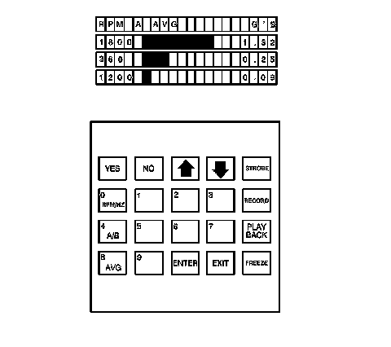

Electronic Vibration Analyzer (EVA) Description and Operation
Electronic Vibration Analyzer (EVA) Description and Operation
Tools Required
J 38792-A Electronic Vibration Analyzer
The J 38792-A , electronic vibration analyzer (EVA), is a 12-volt powered hand-held device, similar to a scan tool, which receives input from an attached vibration sensor or accelerometer and displays the most dominate input frequency(ies) (up to three) on its liquid crystal display. The vibration concern frequency(ies) are obtained through the use of the J 38792-A while following the Vibration Analysis Diagnostic Tables. The frequency(ies) obtained, when applied to the Vibration Analysis Diagnostic Tables, are used as a primary input to help determine the source of the vibration concern.
EVA Vibration Sensor
The J 38792-A vibration sensor incorporates a 6.1 m (20 ft) cord, that allows the sensor to be placed on virtually any component of the vehicle where a vibration concern is felt.
The J 38792-A contains 2 sensor input ports which can be activated individually to allow for 2 individual vibration sensor inputs. The vibration sensors can then be placed in 2 different locations in the vehicle and their individual inputs can be read without having to stop a test, move the sensor and resume the test. The use of 2 vibration sensors can help in more quickly finding and recording an accurate frequency of the vibration concern, and in more quickly making comparisons between 2 different areas of a single component, or a vehicle system, during the diagnostic process.
EVA Vibration Sensor Placement
Proper placement of the J 38792-A vibration sensor (accelerometer) is critical to ensure that proper vibration readings are obtained by the J 38792-A . The vibration sensor should be placed on the specific vehicle component identified as being the most respondent to the vibration. If no component has been identified, install the sensor to the steering column as a starting point.
EVA Vibration Sensor-to-Component Attachment
Important: The J 38792-A vibration sensor must be attached to vehicle components in the manner indicated in order to achieve accurate frequency readings of the vibration disturbance.
The vibration sensor of the J 38792-A is designed to pickup disturbances which primarily occur in the vertical plane, since most vibrations are felt in that same up-and-down direction. The J 38792-A vibration sensor is therefore directional sensitive and must be attached to vehicle components such that the side of the sensor marked UP is always facing upright and the sensor body is as close to horizontal as possible. The sensor must be installed in the exact same position each time tests are repeated or comparisons are made to other vehicles.
The J 38792-A vibration sensor can be attached to vehicle components in various ways. For non-ferrous surfaces, such as the shroud of a steering column, the sensor can be attached using putty, or hook and loop fasteners. For ferrous surfaces, the sensor can be attached using a magnet supplied with the sensor.
EVA Software Cartridge
The J 38792-A uses a software cartridge, the J 38792-60, which provides various information to the J 38792-A . The J 38792-60 provides the J 38792-A with an additional feature which can be selected and utilized to assist in diagnosing vibration concerns.
Important: The Auto-Mode function of the J 38792-A cartridge, J 38792-60, is designed to be used in SUPPORT of the Vibration Analysis Diagnostic Tables ONLY.
This support-feature is available through the J 38792-A Auto-Mode function. When selected, the J 38792-A will prompt the user to select which one of 2 vehicle systems (vehicle speed or engine speed), is the SUSPECTED source of the vibration concern. Using the inputted vehicle data parameters along with the most dominate vibration frequency obtained, it will identify a SUSPECTED source of the vibration concern, such as first-order tire and wheel. This can be a useful feature when used in conjunction with the Vibration Analysis Diagnostic Tables, to confirm results obtained through the diagnostic process.
EVA Smart Strobe Function
The J 38792-A can be used to identify some rotating components/systems which exhibit imbalance IF the component rotational speed is the dominant frequency of the vibration concern. The J 38792-A is equipped with a strobe light trigger wire which can be used with an inductive pickup timing light, J 38792-25 , or equivalent included with the J 38792-KIT, or available separately. Using the Smart Strobe function enables the user to input the vibration frequency to which the strobe will flash. By marking the suspected rotating component, such as a pulley, adjusting the strobe frequency to match the dominant vibration frequency at the engine RPM noted during diagnosis, and then operating the engine at that specific RPM, the mark on the object will appear to be stationary if that object is imbalanced.
EVA Strobe Balancing Function
The J 38792-A can be used to identify the light spot on a propeller shaft IF the propeller shaft rotational speed is the dominant frequency of the vibration concern. The J 38792-A is equipped with a strobe light trigger wire which can be used with an inductive pickup timing light, J 38792-25 , or equivalent included with the J 38792-KIT, or available separately, and in conjunction with the J 38792-A vibration sensor to identify the light spot on a propeller shaft and to help in making a determination as to when propeller shaft balance is obtained.
Averaging/Non-Averaging Modes
The EVA provides 2 modes of displaying the most dominate frequencies which the EVA vibration sensor (accelerometer) detects; averaging and non-averaging (instantaneous).
The averaging mode uses multiple vibration samples taken over a period of time and then displays the most dominant frequencies which have been averaged-out. Using the averaging mode minimizes the distractions caused by a sudden vibration frequency being displayed that is not related to the concern vibration, such as from pot holes or from uneven road surfaces.
The non-averaging (instantaneous) mode is more sensitive to vibration disturbances than the averaging mode. Using the non-averaging mode will generate instantaneous frequency displays which are not averaged across multiple samples over a period of time; the specific vibration frequencies that occur at a specific moment during diagnostic testing will be displayed at that moment. The non-averaging (instantaneous) mode is useful when measuring a vibration disturbance that exists for only a short period of time or during acceleration/deceleration testing.
When operating the EVA in the averaging mode along with the Auto Mode, "A" will be displayed along the top of the screen to the left of the vibration sensor input port being used. When operating the EVA in the averaging mode and the Manual Mode, "AVG" will be displayed along the top center of the screen.
When operating the EVA in the non-averaging (instantaneous) mode along with the Auto Mode, "I" will be displayed along the top of the screen to the left of the vibration sensor input port being used. When operating the EVA in the non-averaging (instantaneous) mode and the Manual Mode, the top center of the screen will be blank.
EVA Display

The most dominant input frequencies, up to three, received from the J 38792-A vibration sensor, are displayed in descending order of amplitude strength.
The frequency readings are displayed along the left side of the screen, followed to the right by either a bar graph or the suspected source of the vibration - depending upon the mode selected, then the amplitude reading for each frequency along the right side of the screen. The top row of the screen indicates the units of measure being displayed for the frequencies along the left side and for the amplitudes along the right side. The top row also indicates the vibration sensor input port which was selected on the keypad (A or B) and which mode was selected: averaging or non-averaging (instantaneous).
The frequency(ies) can be displayed in either revolutions per minute (RPM) or revolutions per second; Hertz (Hz). The selected display type (RPM or Hz) will be indicated at the left side of the screen, above the frequency readings.
When the AUTO MODE function is not in use, a bar graph is displayed next to each frequency to provide a quick visual indication of the relative amplitude strength.
When the AUTO MODE function is being used, the suspected source of the vibration is displayed next to each frequency to provide support to the diagnostic process.
The actual amplitude strength of each frequency is displayed at the right side of the screen and shown in G's-of-acceleration force.